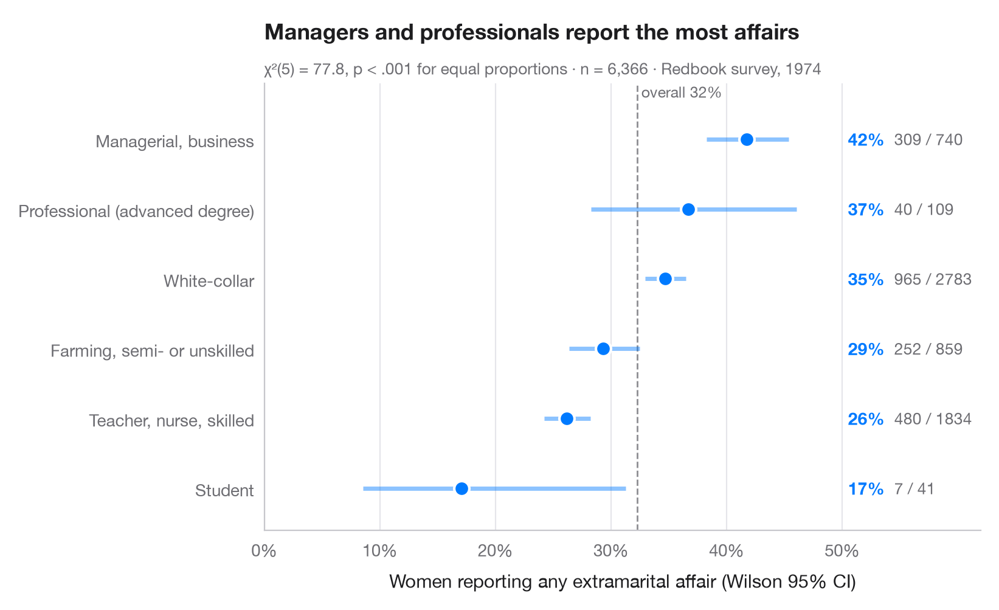

Proportions with confidence intervals
A sorted dot plot of group proportions with Wilson 95% confidence intervals.

When the question is "what share of each group…?", a dot per group with its confidence interval beats a bar chart: the eye compares positions, and the interval width shows at once which groups are small. The Wilson score interval is used instead of the textbook Wald interval because it keeps its 95% coverage for small groups and proportions near 0 or 1. The dashed line is the overall proportion.
Data are the 1974 Redbook survey of married women bundled with statsmodels
(sm.datasets.fair): the share who reported any extramarital affair, by the
respondent's occupation. Intervals come from
statsmodels.stats.proportion.proportion_confint(method="wilson") and the
subtitle tests equality of all proportions with scipy.stats.chi2_contingency.
import matplotlib.pyplot as plt
import numpy as np
import pandas as pd
import statsmodels.api as sm
from scipy import stats
from statsmodels.stats.proportion import proportion_confint
# Data: share of women reporting any affair, by occupation
df = sm.datasets.fair.load_pandas().data
jobs = {1: "Student", 2: "Farming, semi- or unskilled", 3: "White-collar",
4: "Teacher, nurse, skilled", 5: "Managerial, business", 6: "Professional (advanced degree)"}
df["job"] = df.occupation.map(jobs)
df["affair"] = df.affairs > 0
# Proportion + Wilson 95% CI per group, sorted
g = df.groupby("job").affair.agg(k="sum", n="size")
g["p"] = g.k / g.n
g["low"], g["high"] = proportion_confint(g.k, g.n, alpha=0.05, method="wilson")
g = g.sort_values("p")
# Chi-squared test of homogeneity across the six groups
chi2, pval, dof, _ = stats.chi2_contingency(pd.crosstab(df.job, df.affair), correction=False)
overall = df.affair.mean()
fig, ax = plt.subplots(figsize=(8, 4.8))
y = np.arange(len(g))
ax.axvline(overall, color="#8E8E93", lw=1, ls="--", zorder=1)
ax.text(overall, len(g) - 0.45, f" overall {overall:.0%}", fontsize=9, color="#6E6E73", va="bottom")
ax.hlines(y, g.low, g.high, color="#007AFF", lw=2.5, alpha=0.45, zorder=2)
ax.scatter(g.p, y, s=80, color="#007AFF", edgecolor="white", lw=1.5, zorder=3)
for yi, (_, row) in zip(y, g.iterrows()):
ax.text(0.505, yi, f"{row.p:.0%}", va="center", fontsize=10, fontweight="semibold", color="#007AFF")
ax.text(0.545, yi, f"{row.k:.0f} / {row.n:.0f}", va="center", fontsize=9.5, color="#6E6E73")
ax.set_yticks(y, g.index)
ax.set_ylim(-0.6, len(g) - 0.2)
ax.set_xlim(0, 0.62)
ax.set_xticks(np.arange(0, 0.51, 0.1))
ax.xaxis.set_major_formatter(plt.matplotlib.ticker.PercentFormatter(1, decimals=0))
ax.grid(axis="x"); ax.grid(axis="y", visible=False)
ax.set_xlabel("Women reporting any extramarital affair (Wilson 95% CI)")
ax.set_title("Managers and professionals report the most affairs", pad=26)
ax.text(0, 1.02, f"χ²({dof}) = {chi2:.1f}, p < .001 for equal proportions · n = {len(df):,} · "
"Redbook survey, 1974", transform=ax.transAxes, fontsize=9.5, color="#6E6E73")
plt.show()
Figures use the optional PyStatlas style: add plt.style.use("pystatlas.mplstyle") to match the look exactly.
Data source
- Redbook survey of married women, 1974 (Fair's affairs data). Fair, R. C. (1978). A theory of extramarital affairs. Journal of Political Economy, 86(1), 45–61. https://doi.org/10.1086/260646
Data from the 1974 Redbook magazine survey; distributed with statsmodels (sm.datasets.fair) with the author's permission.
The examples illustrate statistical methods. Their titles describe what each figure shows in these particular data — often a small, dated or partial sample — not the author's position on the substantive question. For interpretation, context and data quality, rely on the original sources cited here.
How to cite
PyStatlas is created and maintained by Thierry Warin. If it helped your work, please cite it.
Warin, T. (2026). Proportions with confidence intervals. In PyStatlas: The Python Gallery of Statistical Graphics for the Social Sciences. https://warint.github.io/pystatlas/proportions-surveys/proportions-with-ci/
@misc{warin2026statlas,
author = {Warin, Thierry},
title = {PyStatlas: The Python Gallery of Statistical Graphics for the Social Sciences},
year = {2026},
howpublished = {\url{https://warint.github.io/pystatlas/}},
note = {Source code: https://github.com/warint/pystatlas}
}More in Proportions & surveys

Diverging Likert chart
Five-point Likert items as diverging stacked bars centred on the neutral answer.
ggstats::gglikert()
Stacked proportions by group
100% stacked bars with percentage labels, n per bar, chi-squared test and Cramér's V.
ggstatsplot::ggbarstats()
Mosaic plot with Pearson residuals
Tile areas proportional to cell counts, shaded by Pearson residuals from independence.
vcd::mosaic(shade = TRUE)